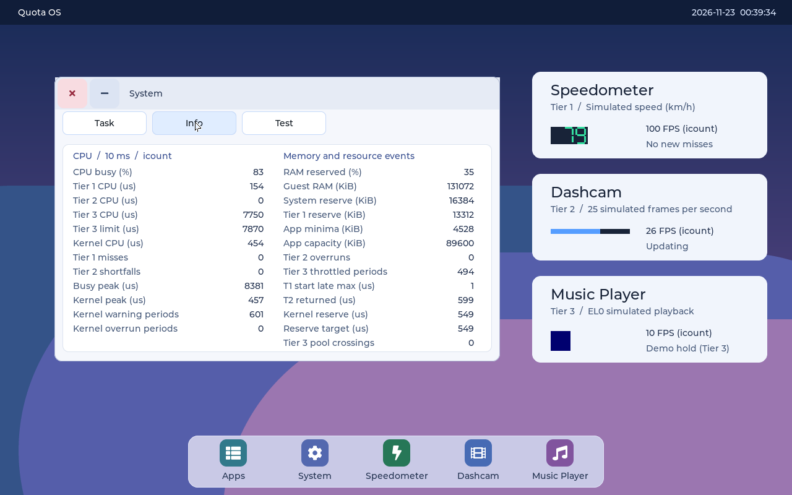
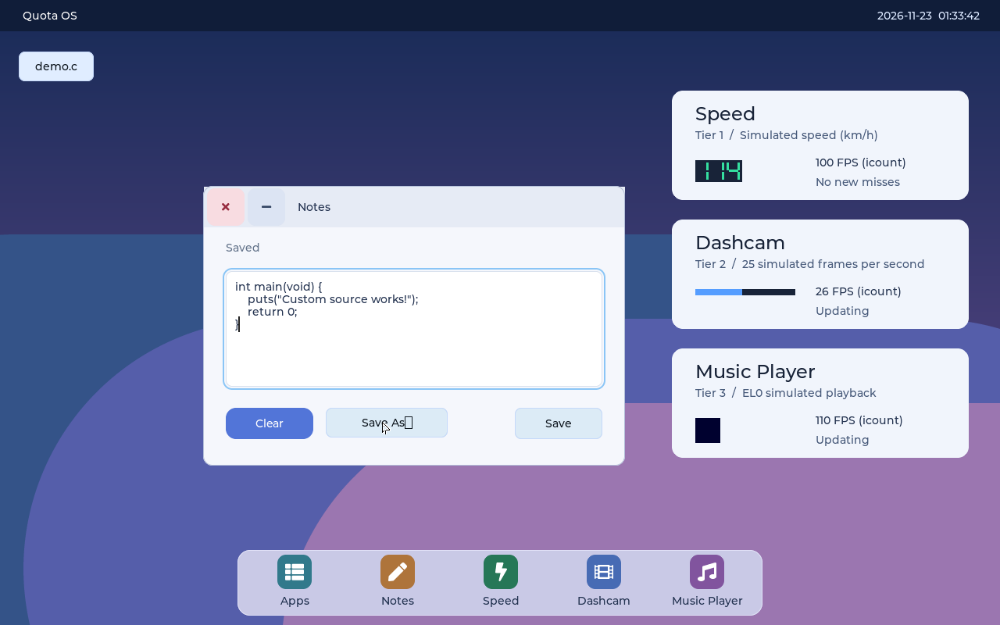
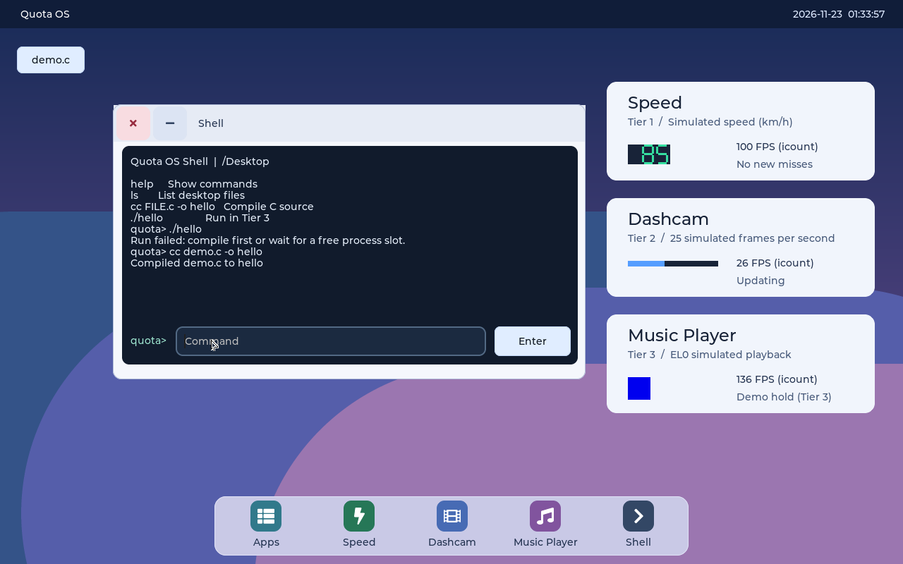

TIER 1
厂商预留
速度表和系统定时服务使用固定 CPU 时间槽。即使桌面任务忙等，关键任务仍按槽表获得执行机会。
ARM64 / RESOURCE-PARTITIONED OS
Quota OS 是一款以资源配额为核心的实验操作系统。内核为关键任务预留执行时间，按容量接纳应用，并将剩余资源交给普通任务共享。



TIER 1
速度表和系统定时服务使用固定 CPU 时间槽。即使桌面任务忙等，关键任务仍按槽表获得执行机会。
TIER 2
行车记录仪声明最低需求。用户同意且容量足够才启动，内核按周期兑现已准入的最低配额。
TIER 3
音乐播放和桌面交互共享剩余 CPU。内核限制总池，池内应用各自承担竞争和延迟。
这组结果来自 QEMU TCG 的 icount 桌面忙等测试，采样的是来宾帧缓冲提交。GPU 队列、宿主窗口呈现和物理屏幕延迟仍待验证。
安装 ARM64 版 QEMU 后，在终端运行下面三条命令。
git clone https://github.com/leiquan/Quota-OS.git
cd Quota-OS
bash tools/run-files.sh在装好 Homebrew LLVM 和 LLD 的 macOS 上，从仓库根目录执行以下命令。QEMU 使用单核 Cortex-A35 和 64 MiB 内存运行构建出的内核。
bash tools/build-lvgl-macos.sh
qemu-system-aarch64 -machine virt,gic-version=2 -cpu cortex-a35 -m 64M \
-nic none -device ramfb -device virtio-tablet-device -device virtio-keyboard-device \
-icount shift=4,sleep=off -kernel build/quotaos-lvgl.bin -append apps-video在 Notes 输入以下代码，点击 Save As…，命名为 demo.c。打开 Apps → Shell，输入命令后点击 Enter。
int main(void) {
puts("Custom source works!");
return 0;
}cc demo.c -o hello
./hello首版支持无头文件的 int main(void)、单条 puts 字符串和 return 0。程序按三级启动，当前不支持二级启动参数。

